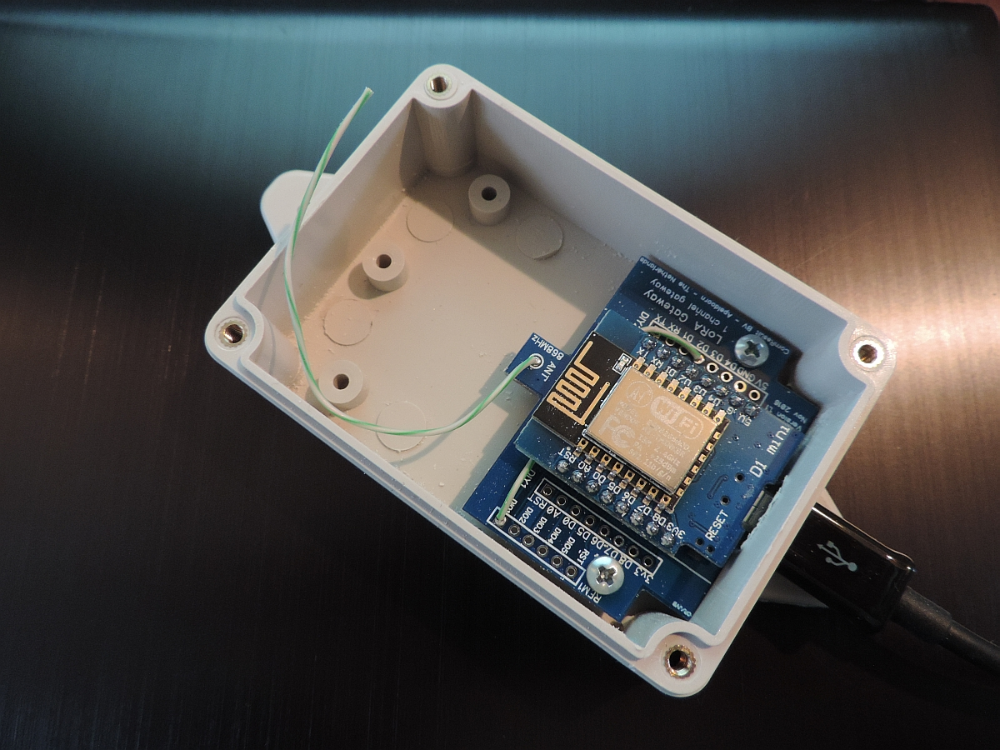

Version: 1.3
date: July 11, 2021
(c) Maarten Westenberg (mw12554@hotmail.com)
This document describes the process of transforming a sinmple piece of software written for the Raspverry-PI to a full-blown single-channel gateway running on an ESP8266 or ESP32 mcu.

The Hardware Guide consists of the following components: